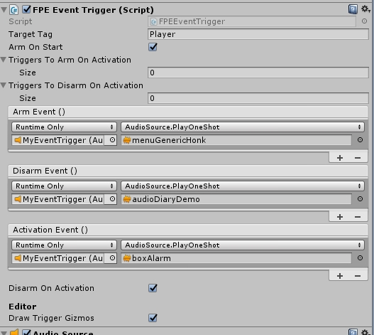

First Person Exploration Kit: Creating a Basic Event Trigger
Event Triggers
Event Triggers are used to create scripted sequences or actions when the player enters a trigger volume. The events can be as simple or complex as you like, as
they are defined in the Inspector using Events. Please refer to the demoTriggers prefab included with the asset and in the demo for an example.
Here are the steps required to make a basic event trigger:
- Create an empty Game Object, rename it "MyEventTrigger"
- Add a Box Collider, and check the "Is Trigger" flag. This will be the trigger volume that the player must walk into to trigger the events.
- Add the FPEEventTrigger component.
- Adjust the rest of the Inspector fields:
- Target Tag: The object tag that this trigger will react with. Default is Player, which means objects tagged as "Player" will fire this trigger's events.
- Arm On Start: If true, the trigger will be armed when the scene starts. If this trigger is to be armed by another trigger, set this value to false.
- Triggers to Arm On Activation: A list of other FPEEventTriggers that will be armed when the target object enters this trigger.
- Triggers to Disarm On Activation: A list of other FPEEventTriggers that will be disarmed when the target object enters this trigger.
- Arm Event: These events will fire when this trigger is armed.
- Disarm Event: These events will fire when this trigger is disarmed.
- Activation Event: These events will fire when when the target object enters this trigger.
- Disarm On Activation: If true, this trigger will be disarmed when the target object enters this trigger, after its activation event(s) are fired.
- Draw Trigger Gizmos: If true, trigger gizmos will be drawn in the Unity Editor. I recommend you leave this as true, for easier testing and visualization.
- Run the scene, and walk the player into the trigger.
- Edit your list of events according to the results you want for this sequence of events.
Note: By default, Event Trigger states are saved and loaded at a basic level. For example, if you have a few triggers in your scene in
various armed or disarmed states when the game is saved, those states will be restored when the game is loaded. Saving additional outcomes from trigger Events may
require additional effort. For example, if a trigger spawns a Pickup object, that will be saved for you since Pickups are automatically saved. But if your trigger
makes a cutscene play or wall crumble, you will need to save those states yourself. Please refer to the Save/Load System documentation and
included demoTrigger prefab for more details.
Below is a screenshot of the sample trigger created from the above steps. This trigger Arms on start, plays a sound for each of its events, then disarms itself when activated.

Below is a screenshot showing a trigger that is not yet armed (red).
Below is a screenshot showing a trigger that armed (green).